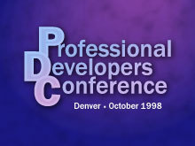
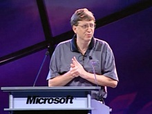

PDC 1998 was October 11-15 at the Colorado Convention Center in Denver, Colorado. Windows NT 5.0 (Windows 2000) beta was released to attendees and Windows DNA technology was announced.
PDC 1998 Keynote with Bill Gates[WMV] [0:49:39] [2011/05/21]This PDC 1998 video features the Bill Gates keynote, "Building Windows-Based Applications For The Internet Age." Watch as Tod Nielsen comes out on stage to talk about improving application deployment…